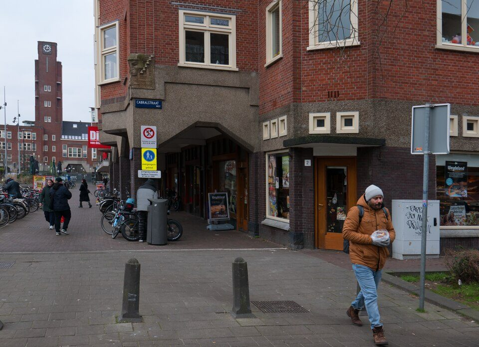

White Label West
A local coffee stop on Jan Evertsenstraat, beyond Oud-West.
Hours, bookings & sources
Published weekdays 07:30–17:30, weekends 08–17:30.
Former western countryside became a 20th-century residential district with striking Amsterdam School brickwork. Look at Mercatorplein’s architecture before coffee on Jan Evertsenstraat; a Foam-linked photography project offers another reason to travel beyond the centre.
Apple Maps: open the Guide, then choose Add to Guides to save it. The CSV includes every listed stop.

A local coffee stop on Jan Evertsenstraat, beyond Oud-West.
Published weekdays 07:30–17:30, weekends 08–17:30.
Photography projects beyond the main Foam museum.
In Her Own Way at Mercatorplein 1–29 October 2026; Al Nisa at MAQAM in nearby Kolenkitbuurt to 20 December. Separate locations: confirm access and hours.